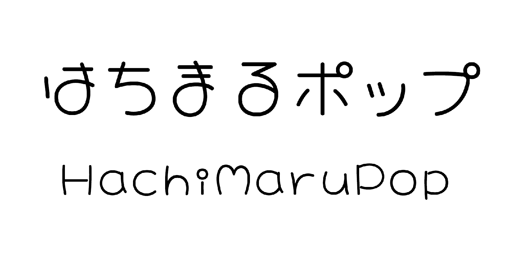

References / Typeface / 424
Hachi Maru Pop typeface
Nonty’s open-source Japanese font, based on the round handwriting (marumoji) that girls made popular in the 1970s and 1980s.
- Source
- GitHub: noriokanisawa/HachiMaruPop
- Creator
- Nonty (Norio Kanisawa)
- Made
- 2020 (font copyright date); repository created March 2020
- Style
- Kawaii (agent-proposed, not yet reviewed by a person)
- Moods
- Cute, playful, friendly
- Evidence
- Inspected the repository’s sample image
HachiMaruPop_sample.png(2000 × 1000 px). Read the README,DESCRIPTION.en_us.html, andOFL.txtin the repository. - Reviewed
- Rights
- Open license, stored. License: OFL-1.1. Rights policy
Context
The README says the font was made for Google Fonts and takes its idea from the round letters (丸文字) popular in Japan around the 1980s. The English text calls it “a cute font” based on the round handwriting popular among young Japanese girls in the 1970s and 1980s, and notes that some schools prohibited the round letters. GitHub README.
The name refers to “80” for the 1980s. The designer writes that it is eye-catching but “lacks a little on readability”, and recommends it for large sizes. It covers hiragana, katakana, Latin, numerals, symbols, and about 6,700 kanji (JIS levels 1 and 2 and IBM extensions), and it works in vertical text. DESCRIPTION.en_us.html.
OFL.txt reads “Copyright 2020 The Hachi Maru Pop Project Authors” and licenses the font under the SIL Open Font License 1.1. OFL.txt.
Observed
- The sample shows “はちまるポップ” and “HachiMaruPop” in black on white.
- Strokes are a single even weight with fully round ends, like a felt-tip pen.
- Kana are wide and bulbous: the loops of は, ま, and る are large closed circles, and the handakuten on ポ and プ are open rings.
- In the Latin line, the “i” has a ring for its dot, the bowls of a, o, and p are near-perfect circles, and the capitals H and M are narrow and soft-cornered.
- Letters sit loosely spaced on a common baseline, with no contrast between thick and thin.
Why it belongs
The face shows the typographic side of kawaii: everything that can be a circle is a circle, and dots become rings. This matches the style record’s “Round letters.” rule.
The designer’s own warning about readability supports the style’s rule to use such faces for headings and keep body text in a plainer rounded sans.
Borrow
Use a round handwriting face for short headings, names, and labels, and a plain rounded sans for body text.
Replace small dots in icons and decoration with open rings to echo the type.
Measured
Machine-extracted by tools/image-traits.py on . Full measurement.
- Mean chroma
- 0
- Palette
- #ffffff 93%
- #000000 3%
- #808080 1%
- #b8b8b8 1%
- #e6e6e6 0%
- #121212 0%
- #cccccc 0%
- #939393 0%

